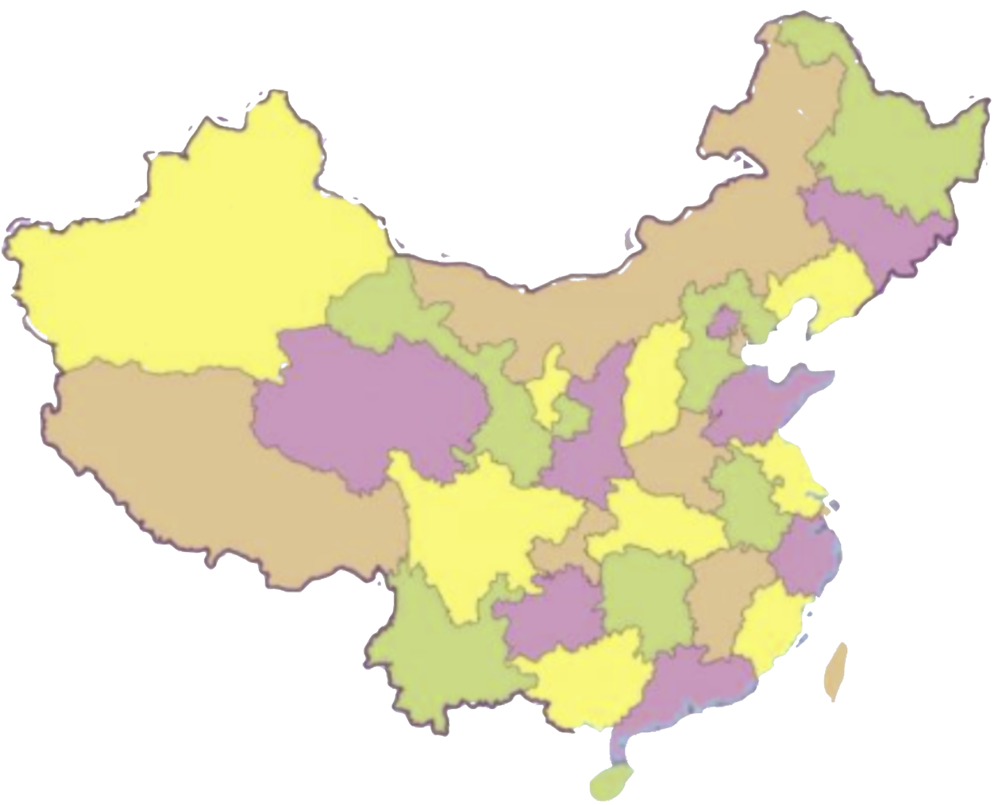

碳中和之我们的家乡
新冠疫情肆虐全球，对人们的生命和生计造成了严重的威胁。但与此同时，一个更大的威胁正在悄然迫近：气候变化！
中国的碳排放占全世界排放总量的28%,目前,中国已经设定了雄心勃勃的减排目标:2030年二氧化碳排放要达到峰值，2060年要实现碳中和！
要达到这一目标殊为不易,但我们却势在必行！
1909年以来，中国的平均气温升高了1.5度。
1980年之2012年期间,华东地区的海平面上升了93毫米。
上世纪70年代至今,冰川已融化了10%......
2018年,中国拥有全球95%以上的电动公交车和近一半的乘用电动车。
到2024年,中国的可再生能源新增装机量将占到全世界的40%。
通过提升可再生能源、天然气、电力使用比重，中国正在加快构建绿色多元的能源供给体系。
但另一方面，经济的持续发展,对煤炭的持续以来,也意味着中国迈向碳中和之路任重而道远！
而有相关学者指出，城市在中国脱碳化进程中的作用是显著且必要的，因此如何从城市出发，推动中国碳中和事业更进一步，则是我们这一代人需要思考的问题。
让我们一起，先从自己的家乡出发，为家乡碳中和事业的发展积极建言献策，回报这片养育过自己的土地吧！
